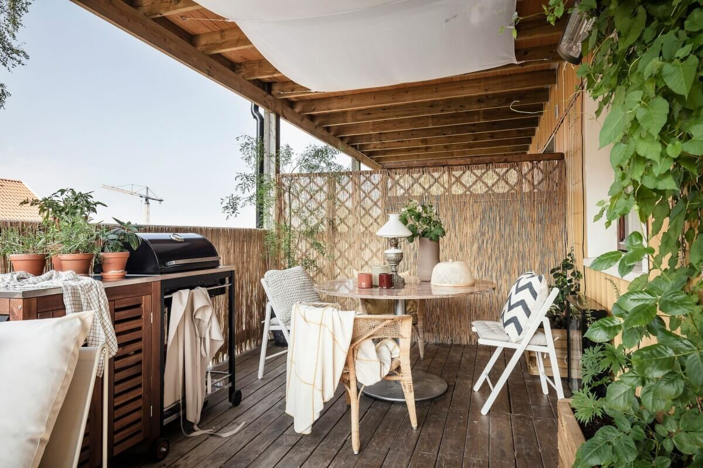

Nuestros estilos favoritos

Estilo Japandi

Estilo Industrial

Estilo Natural Exterior

El estilo oriental se caracteriza por tonos claros en lo mobiliario, la gama de colores terrosos (tonos tierra). Son ambientes diseñados con plantas de bambú, velas y sahumerios que brindan equilibrio y armonía al entorno. La madera en lo mobiliario, atreves de sus distintas tonalidades brinda calidez y sencillez. Sus espacios no son cargados, al contrario, cuentan con fluidez de transito en el ambiente.
El estilo industrial también esta de moda. Combinar lo rustico como las paredes en ladrillo con mobiliario en tonos oscuros y las plantas dan sensación de equilibrio al lugar. Los techos o algunas columnas están hechas en hierro lo cual generan peso visual y asi logran transmitir importancia.
En un estilo natural exterior, como puede ser un jardín o un deck, se puede ambientar muy bien con listones en madera color caoba o cedro que brindan calidez al lugar ya que es un espacio para compartir distintos momentos. Macetas rectangulares con plantas y una fuente de agua de un buda podrian completar la escena.
El estilo moderno es el que predomino en los ultimos años. Este estilo utiliza la predominacion de lineas rectas y los polos opuestos de la tonalidad de colores yendo por un ambiente lleno de colores claros, o volcandose a un entorno de colores oscuros. La prescencia de luminarias LED, le da el toque distintivo.